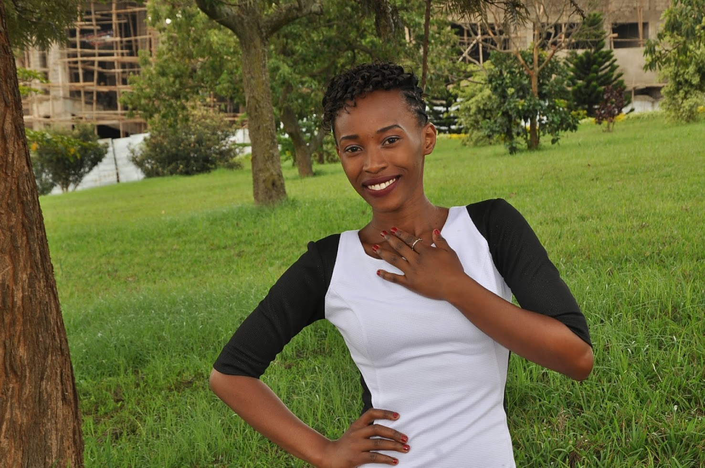

UWABIKIRAMARIYA Roselyne

These are the projects that i have created lately and their links:
- Hello-world project, it is the first website that shows how the local and remote master interact. Hello world
- cookie-recipe project, it is about cloning this file from somewhere and edit it for my own uses. Cookie recipe
- My-first-webspage project, it contains three files: my-first-webpage.html that described how instert images, lists, and links; my-pet-webpage.html as my favorite animal and its activities; my-favorite-things.html includes the things that i like. My first webpage
All about me
I am UWABIKIRAMARIYA Roselyne, i live at muhima sector in Nyarugenge district. I am a trainee at WeCode moringa school which is taking place at KIE and a learner at Andela Learning Community (ALC).
Education background
- 2001-2006: Primary school at Ste Fammille primary school
- 2007-2009: Secondary school, at Lycee de Ruhango "IKIREZI"
- 2010-2012: Secondary school, at Stella Matutina Secondary School
- 2013-2016:Kigali Independent university (ULK)
Diploma and Certificates
- A2 in Phyisics Chemistry Mathematics (PCM)
- A0 Diploma in Computer Science
- English proficiency certificate
Language spoken
- English:very good
- French:very good
- Kinyarwanda:excellent
The world in general, is building so much using technology. Based on that i want to be a part of those who make the world much brighter through technology as a programmer, that's why i chose to take this programming class in Wecode Moringa school. So that i can learn how to learn from what i already know to what i want to achieve.